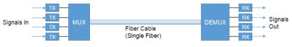
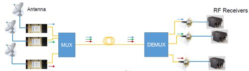

Company profile:
APIC Corporation

APIC Corporation
5800 Uplander Way
Culver City, CA 90230
United States
| Tel.: | +1 310 642 7975 |
| E-mail: | |
| Website: | www.apichip.com |
| Social media: | LinkedIn, YouTube |
Company Description
Advanced Photonic Integrated Circuits (APIC) Corporation is a pioneering photonics business founded in 1999 and headquartered in Culver City, CA (minutes from LAX). Over 15 years of experience in developing advanced devices for the US military. We specialize in the design, fabrication, assembly and test of devices for high fidelity transmission of RF signals over single mode fiber. APIC’s capabilities include: photonic system design and integration, rapid photonic R&D and prototyping, and the manufacturing of high performance electro-optic components.
APIC has the following distributors:
- CYBEL: North America
- MorePhotonics: Europe
- WaveOptic: China
Products
| Product | Description |
|---|---|
| distributed feedback lasers |  APIC has developed very low noise (RIN) DFB lasers in the 1550 nm wavelength range with models that perform direct modulation (DML) up to 6 GHz and continuous wave (CW) lasers.
The DML laser come in a variety of optical power outputs from 10 to 40 mW with RIN between -160 and -155 dB/Hz. The analog/CW lasers have optical power output levels between 40 and 120 mW with RIN between -170 to -160 dB/Hz; some models maintain low RIN out to 20 GHz. |
| fiber-optic links (… and related equipment) |  APIC offers turnkey transmitters and receivers that support high fidelity analog and high modulation digital signal transmission to 20 GHz. Our 20-GHz MicroATx is a hardened externally modulated device originally designed for tactical aircraft use. APIC is on the cusp or releasing a modular rack mount unit for its transmitters and receivers. |
| laser diode drivers |  APIC produces a turnkey tabletop laser drive module specifically designed to operate its high power, ultra low RIN lasers. The OEM laser of choice is integrated into the laser drive module at the factory. The laser drive module includes a high-quality laser driver with a low-noise power source, current driver and accurate temperature control circuit to maintain stable laser output with minimal noise. APIC is in the process of developing a similar turnkey driver module for its Direct Modulated Lasers (DML). A high-quality laser driver with a low-noise power source, current driver and accurate temperature controls is required. If you do not have such equipment, we recommend you consider purchasing our turnkey tabletop CW laser drive module. The drive module has power conditioning with laser and TEC control electronics designed specifically to operate our lasers with minimal noise. |
| photodetectors |  APIC analog receivers are fabricated using InP/InGaAs material platform and designed for highest responsivity, bandwidth, input optical power and maximum output current linearity. To achieve this, we use a proprietary epitaxial design and receiver configuration that allows independent optimization of the above parameters. The devices are optimized to work in RF over fiber links that require high dynamic range, low noise figure and high RF gain. The packaged components are soldered and laser welded, ensuring maximum physical reliability and performance stability with ambient temperature variation. We currently offer different configurations of receivers in the frequency range from DC to 40 GHz with a K-connector RF output. Some models include an internal 50 Ohm impedance which obviates the need for a bias T. APIC also offers a surface-mount 20-GHz PD with a 50 Ohm internal impedance. |
| research and development |  APIC Corporation designs and fabricates its own laser and photodetector chips for high fidelity RF over fiber applications. In addition to producing high performance devices in standard package configurations, APIC performs custom chip design work as well as custom packaging and electronics for specific applications and project requirements. |
| RF over fiber |  APIC's full product line is designed for high fidelity analog/RF signal transmission over single mode fiber (SMF). In addition to analog signals, APIC's direct modulated lasers (DML) is capable of transmitting high modulation digital signals such as 64 QAM LTE signals for fronthaul transport of 3G/4G/5G communications. |
Information of APIC Appears on the Following Pages
Company profile (this page)
Pages with Suppliers for Products
distributed feedback lasers, fiber-optic links, laser diode drivers, photodetectors, research and development, RF over fiber
Encyclopedia Articles
distributed feedback lasers, fiber-optic links, laser diode drivers, photodetectors
Profiles of Other Suppliers
APIC is shown as alternative supplier on 104 pages of other suppliers not having an ad package.
Other Pages
On various pages, a banner can randomly show up which displays a random selection of logos of suppliers with an ad package.